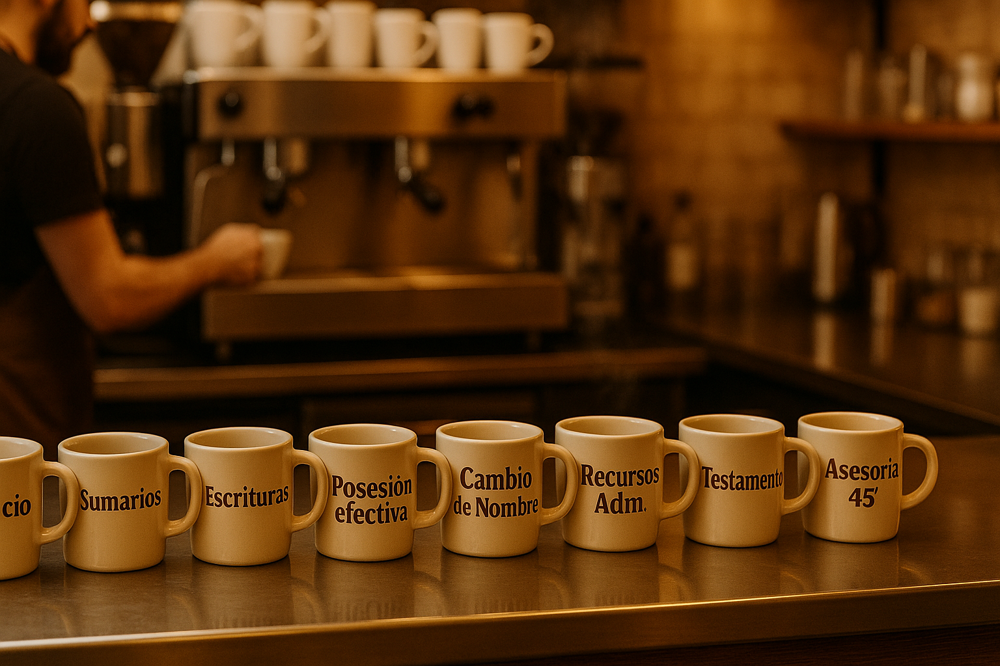
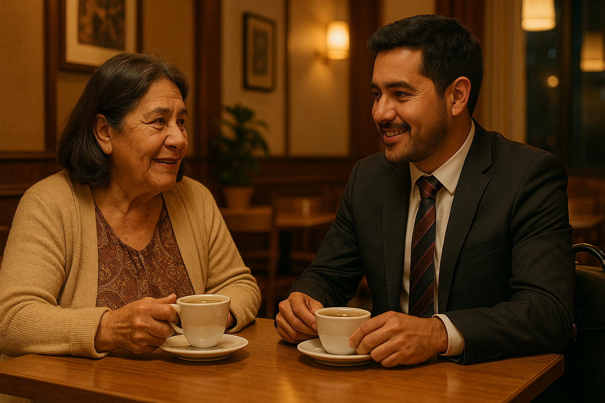
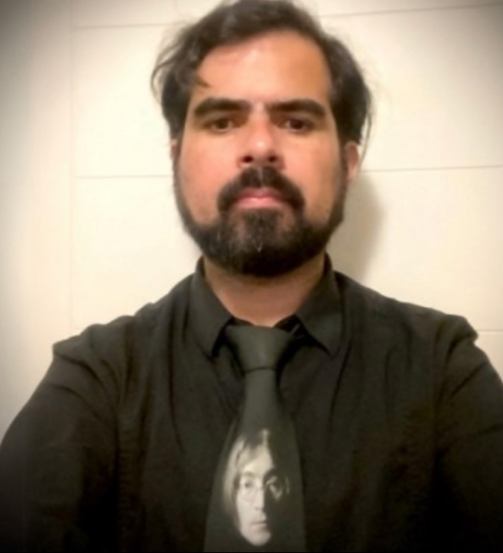

1) Consulta
Conversemos tu caso (presencial u online) con un buen café.
Mientras lo disfrutas, resolvemos lo legal en persona u online: claro, rápido y en palabras simples.
✨ Nuevo: Pop-Up Café Judicial® (Barrio Italia, Lastarria, Providencia). ¡Pronto fechas!

Un servicio legal presencial u online con trato humano: te invitamos tu café favorito y, en esa instancia, te asesoramos en persona o por videollamada y trabajamos tu caso (escrituras, contratos, asesorías y más).
Nuestro gancho es simple: derecho en simple, con buen café. Nos enfocamos en claridad, pasos concretos y entregables listos para usar.
Además, contamos con la modalidad Pop-Up Café Judicial®: encuentros itinerantes en distintas cafeterías de Santiago (Barrio Italia, Lastarria, Providencia y más) para acercar el derecho a tu propio barrio.

Resolvemos dudas y definimos tu hoja de ruta. Incluye resumen por correo.
Redacción a medida en lenguaje claro. Una iteración incluida para ajustar.
Detectamos riesgos y mejoras. Entrega con comentarios y sugerencias.
Conversemos tu caso (presencial u online) con un buen café.
Revisamos documentos y definimos riesgos.
Plan claro con tareas y entregables.
Redacción, presentación o gestión concreta.
Muy pronto estaremos en cafeterías de Santiago (Barrio Italia, Lastarria y Providencia) con eventos especiales: una taza de café + asesoría legal clara y cercana.
Café Judicial® es itinerante: nos movemos por distintos cafés y barrios para acercar el derecho a tu zona.

¿Quieres enterarte de las próximas fechas o invitar el Pop-Up Café Judicial® a tu cafetería/barrio?
Café Judicial® une el mundo legal y la gestión estratégica. Dos amigos que creen que las conversaciones difíciles pueden volverse más claras y cercanas… con un café al medio.
Egresado y Licenciado en Derecho por la Pontificia Universidad Católica de Chile, una de las universidades más prestigiosas del país. Con más de 15 años de trayectoria ha ejercido en el ámbito penal, civil y de familia, combinando litigación, redacción de documentos y acompañamiento cercano.
Fue fiscal adjunto en la Fiscalía Metropolitana Sur y abogado de la Municipalidad de Macul. En el ámbito privado ha acompañado a emprendedores, pymes y familias.
En Café Judicial® es el rostro principal de la asesoría legal: escucha, orienta y entrega soluciones claras.
“El derecho no tiene por qué ser enredado: mi foco es que salgas con claridad y tranquilidad.”

Une gestión y lo humano: convierte trámites en experiencias simples, como una conversación con café.
Operaciones y mejora continua en proyectos de servicios; coordinación de eventos y alianzas; organización y seguimiento con herramientas colaborativas.
Notion, Google Workspace, hojas de cálculo y analítica básica de sitio web.
“Me gusta convertir trámites en experiencias simples — como conversar con un café.”

Diseño de identidad y sistemas visuales, retail/visual merchandising y campañas de comunicación; gestión y calendario de contenidos para marcas y PYMES.
Figma, Adobe Illustrator, Photoshop e InDesign; Notion, Google Drive y Canva.
Convierte información compleja en piezas simples y elegantes, priorizando legibilidad y coherencia de marca.
“Mi trabajo es que todo se entienda de una mirada: claro, ordenado y con carácter.”

“Online fue clarísimo. Salí con pasos concretos y un resumen útil.”

“Tomamos café en mi barrio y me entregaron el documento al día siguiente.”

“Revisaron mi contrato y me enviaron los cambios el mismo día. Sin vueltas.”
Eventos en cafeterías: café + asesoría legal de 45’ en tu barrio.
Un espacio para estudiar, reunirse y conversar con calma.
Simulaciones de juicio y acompañamiento a estudiantes y equipos.
Charlas, merch con sello jurídico y FritHurra! (spray textil) — en preparación.
Te explicamos todo sin tecnicismos, con ejemplos y pasos accionables.
Santiago y online para todo Chile.
Por WhatsApp o en los botones “Agendar”.
Escríbenos y te respondemos a la brevedad.